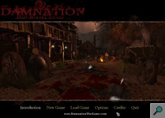

Another modification for Unreal Tournament?
Overview
{kind=link}
At the beginning of 2004, I replied to a forum post in which people from the Blue Omega company requested applicants for a job involving programming a modification for the Unreal Tournament game. After sending them my resume and completing a skill assessment test, I signed a contract for what I would spend the next 7 months working on.
The aim of the project was simple: to create a modification for the Unreal Tournament 2004 game. This modification, or 'mod' as they're usually called, would be entered in the nVidia Make Something Unreal Contest. Since the first place prize was an licence for the Unreal engine, this would significantly decrease the price of publishing a full-fledged game (a licence for the Unreal engine retailed for about 350 000 USD at the time.)
{kind=link}
Beginning
At the beginning of my contract, all the details of how the mod would work or what was needed was not available. I was therefore instructed to get prototype weapons working: an arrow-gun, dual 4-barrelled pistols, and a shotgun. Meanwhile, the other developer on the team would be working the game base, such as player control and abilities.
Following this, I was asked to add a way for the player to save his progress in the game. On Unreal-based games, there are usually native Save and Load functions that can be used to same the current game. This works by taking a snapshot of the loaded objects. However, since Unreal Tournament is primarily a multi-player game, the saving and loading functions did not work: some bugs existed in the code and the developers at Epic did not bother fixing them since they were not using that code anyway. Furthermore, since the engine's source code is not available to mod developers, I had to develop my own saving system.
The system I developed to save and load games is similar to the system used by Epic: each object that exist in the game is inspected and, if necessary, its properties are saved in a file. When loading, all objects which are dynamically spawned are destroyed and recreated using the information from the save file. This technique has an advantage over the technique used by Epic: if the player is already in the level specified in the save file, then the level does not need to be entirely reloaded.
{kind=link}
After the saving system was completed, I started working on the GUI: first, the menu elements from Unreal would be re-skinned in order to give them a more unique appearance. Then, the in-game GUI (the heads-up display, or HUD for short) would be created. The HUD is the part of the screen that informs the player of the status of his character: health, energy, ammo. Some features were added to make the HUD more visually attractive: for instance, I used a shader for the health bar which would animate an otherwise static element.
Phase 4
The Make Something Unreal Contest was divided in multiple phases to allow a maximum number of participants and to allow mods to improve over time. By the time we started working on Damnation, the first 3 phases of the contest had come and gone. What was left was only the fourth phase and the grand finals. However, to qualify for the grand finals, the mods would need to receive at least a 'finalist' mention in the fourth phase.
With no dedicated testing team, no bug tracker and only 2 days to test, debug and ship the mod before the deadline, there was much left to do. Most of the testing was done by the people at Blue Omega. The bug reports were then forwarded by email to whomever was responsible for that particular bug. Needless to say, the last days before the deadline stretched late into the night.
{kind=link}
However, we did get the product shipped in time. This was not without some problems: many people reported horrible performance when playing the game. After a couple of weeks, we got word that Damnation was a finalist for the fourth phase: this was our ticket into the Grand Finals. Mods chosen for the grand finals had an additional 2 months to submit a new version for judging. Though we did not receive the results until we submitted our grand finals version, Damnation ended up in 6th place in the Non-FPS category for phase 4 -- a somewhat disappointing result.
Improvements
Rather than adding new content, the focus of the word between the fourth phase and the grand finals was to be to polish the mod. Numerous changes needed to be done, such as optimizing the levels for performance, upping the graphics quality and so forth. Several measures were taken to improve the overall quality of the mod. For instance, a bug tracker was setup on which bug reports could be filed and suggestions could be posted.
During the 2 months, I was asked to make numerous improvements to the visual quality of the mod. While in phase 4 we uses a system of pop-up windows to display hints to the player, it was decided that this was too distracting as this paused the game until the player clicked the 'Dismiss' button. I therefore added a system where hint messages would fade-in and fade-out on the side of the hud: the players would be able to read the messages if and when they wanted.
A second modification involved changing the look of the main menu. By simply adding black overlay bars on top and bottom of the screen and replacing the buttons by text that would fade-in and fade-out, the main menu looked much more polished than it used to.
{kind=link}
Third was the incorporation of SquirrelZero's real-time shadows code. Normally, characters in Unreal Tournament can have a shadow, but that shadow is static: while it mimics the movements of the player, lights in the scene do not affect the shadows. SquirrelZero, a developer for the Frag-Ops mod, had posted code on UnrealWiki that detailed the implementation of real-time shadows; that is shadows that would dynamically change depending on the ambient lights. I added that code to Damnation, initially reserving it for people with high-end machines. However, after heavy optimizations, the code was fast enough to be part of the default settings.
Fourth, the 'healing totems' used in the game were improved. Originally, those totems would simply regenerate 20% of the player's health instantly. The new totems would regenerate the player's health gradually, as well as replenish their remaining lives. By adding some nice-looking emitters (made by other people at Blue Omega), the totem became one of the most aesthetically pleasing parts of the game.
Finally, the cameras used in game were improved. Damnation is different from most games as the player is required to navigate both in first and third person views: first person view is used for combat while third person view is used to interact with the world. One of the biggest complains heard from the Phase 4 version of Damnation was that the awkwardness of the third person controls. Using the code written for Phase 4 as a base, I changed the camera and player control code to make navigation easier. I also added things such as fixed cameras and panning cameras. This allowed us to give the game a more cinematic feeling. For example, when moving along a rope, the camera would move back to give the player a wide view of the scene.
{kind=link}
Grand Finals
The final days before the deadline for the Grand Finals were much less intense than the ones for the Phase 4. This is partially because the presence of the bug tracker allowed us to fix bugs as they were appearing instead of waiting until the end. One change that was made very late was the inclusion of a difficulty scale. Many people, including myself and the other programmer of the mod, felt that the game was too easy. This was even worse as managers from Blue Omega requested that the game be made even easier than it currently was! After talking it over with the other programmer, I decided to add a simple difficulty system to the game: this system would simply restrict which weapons the player starts with and how much health could be recovered at the healing stations. This made the game substantially harder (unless the player chose the 'Easy' level, in which case the game remained unchanged.) However, the people from Blue Omega felt that this was a bad idea. After some arguing from myself and the other programmer, they chose to keep the feature in.
Almost a month after the final version of the mod was released, the results for the Grand Finals were published. It seemed that the numerous improvements made to the game paid off: Damnation finished in second position in the 'Best Mod' category.
Overall, I really enjoyed working on this modification. Amongst other things, it allowed me to learn how to use tools such as collaborative version systems (in this case, SVN).